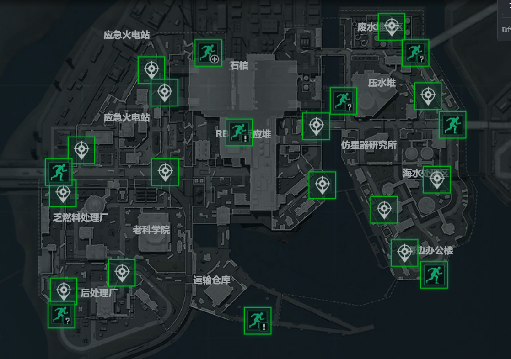

5个赛季后，AZ3 核电站为什么更让人想去玩？
一、留存引擎：为什么「机密玩家」想回来玩
先锁定主要对象：机密玩家——游戏的“绝大多数”玩家，他们是搜打撤的活跃与付费基本盘，主要又分为跑刀和机密满改猛攻队。「想不想再来一局」全看这张图能不能稳定给他们值得一玩的循环。从我的理解来看，AZ3 对他们的吸引力来自多点的共同作用：
① 高价值容器密度高，，让预期收益为正。② 房卡级别收益高（见第二节）：顶级产出不只是被少数固定点位垄断，而是通过秘钥向愿付动线代价的玩家开放，玩家有了新的心理期待和预期——免费的房卡房，但需要通过秘钥上的雷达穿越地图前往。③ 动线可博弈、节奏可预期（见第四、五节），让高手把不确定性转成操作空间，越玩越顺。
对数值策划的启示：留存不靠堆数值，而靠设计一条「风险可见、回报可达、上限够高」的循环。AZ3 用循环而非数值把机密玩家钉在座位上——而这条循环在数值上是可读、可验证的，这正是我们分析它能成立的底气。
二、秘钥系统：用「动线代价」兑换「房卡级别收益」的拉力
AZ3 的秘钥设置，是一手「算得清收益、算不清代价」的好棋。紫卡 / 金卡 / 红卡三档房间的收益被钉死在数值表上，但取得它们的钥匙不是白给的——拿到 AZ3 秘钥，意味着动线被强制打乱，必须付出绕路、穿越交战区、承担风险的活代价，才能拿到房卡级别收益。
这里的设计巧劲，正是「让人想去玩」的钩子：玩家明知产出几何（数值透明），却要为它赌一把不可先验量化的代价（取决于本局出生点、当前功率、对手分布）。收益确定、代价浮动，这种「稳赚的预期 + 未知的冒险」组合，比纯随机或纯固定都更易上头——它把「我想拿高价值」从口号变成一道带成本的、每局都要重算的决策题。
这也是机密玩家既爱又恨 AZ3 的根源：高收益可达（爱），代价要拿动线和命换（恨）。正是这种张力，把纸面数值变成了持续的游玩拉力。
三、地图范式：照搬航天最成功范式，玩家「习惯且易懂」所以敢玩
AZ3 在资源布局上明确参考了《三角洲行动》迄今最成功的地图——航天基地的核心区范式：核心区四室 + 总裁办公室。落到 AZ3，资源点组织成「四象限上的四个区域 + 核心区的反应堆与石棺」：

① 四象限：东、西、南、北四个次级资源区沿对角线 / 中轴铺开，玩家一进场就能用「我在哪个象限、核心在哪」建立空间心智模型；② 核心区：反应堆主楼 + 石棺（仿星地下研究室 / BOSS 房），对应航天的「核心四室 + 总裁」，是整张图的价值吸引子与交战漩涡。
这套布局的妙处是降低入坑门槛：航天已经向玩家植入「核心区=高价值物资点+高交战机会」的认知范式，AZ3 把它平移过来，玩家不需要重新学一套地图语言，上手即懂、上手即能产出正反馈——「易懂」本身就是「想玩」的前提。但熟悉感之下又藏着新的博弈，创新留在机制层而非完全照搬硬套。复用被市场验证过的成功范式，是快速建立玩家预期、降低学习曲线性价比最高的手段。
四、真正把「搜、打、撤」都做厚，体验扎实才想玩
很多搜打撤图只沾边其中一两件，AZ3 是少数把三件同时做厚、且互相咬合的图。每一件都能用数值描述其厚度，合起来就是「玩着不空、不憋、不憋屈」的扎实体验。逐件拆：
4.1 可搜：资源极丰富、高价值容器多、秘钥设计合理
资源点密度高、高价值容器（含紫 / 金 / 红卡房间）分布均匀又不集中到一点，配合秘钥系统——想搜得肥有清晰路径，想稳刮也有边角可吃。「可搜」成立，玩家第一感就是「这图有得捞」，自然愿意进。
4.2 可打：核心集中 + 动线灵活 + 通路交战环境
核心资源点集中天然制造必争之地；更关键的是，AZ3 的动线因秘钥、出生点与资源点组合而不像其他图极固定、相对灵活——灵活即「路线不可被完全预判」，到处能冒出打架空间。设计者还在资源点间通路布置了合理交战环境：如餐厅（中近距缠斗）、连接东西区至核心区的桥（狙击与横拉对枪位）。这些 choke point 把「可打」从偶然变成结构性必然——喜欢对抗的玩家在这里永远有架可打，这是「想玩」的第二引擎。
4.3 可撤：撤离点分布在四象限 X 轴两端，低难度但要绕路
常规撤离点落在四象限 X 轴（东西轴）的左右两端，撤离本身门槛低、友好；但直走会经过多个资源区交界处（核心交战区），必须绕路避开核心才能安稳出去。这一笔把「撤」升级成「一次带风险的路径决策」——撤得出去，但要用路线规划换。可搜、可打、可撤在此闭环：你搜得越深，撤时绕得越远；你打得越狠，撤时越怕被堵。闭环越紧，一局的「完整体验」越强，想再来一局的冲动就越自然。
| 维度 | AZ3 的做法（可量化） | 对「想玩」的贡献 |
| 可搜 | 资源极丰富、高价值容器多、秘钥合理 | 第一感「有得捞」，愿意进 |
| 可打 | 核心集中 + 动线灵活 + 餐厅/桥等 choke point | 喜欢对抗者永远有架打 |
| 可撤 | 撤离点在四象限X轴两端、低门槛但需绕开核心 | 撤得出但有风险，完整体验闭环 |
五、30 分钟时间窗：每十分钟贯彻一次「搜打撤」，让人掌握并想再来
AZ3 把一局切成清晰的三段式时间窗，每段都给玩家预期与掌握感，且每段重演搜打撤的核心理念。可预期，是「想玩、敢玩、想再来」的温床。
0–10 分钟：搜
各出生点就近搜索附近高价值资源点。反应堆功率全图播报，由最初的 30W 起，每开启一个核心资源点大保升高 600W，直到 5 个全开达到 3030W。功率播报是全局预期锚点：玩家不用看表，听数字就知道「现在核心值不值得冲」，开局即有目标感。这一阶段是纯粹的「搜」。
10–20 分钟：打
地图标杆任务「紧急停堆」开启，功率直升 4800W，玩家随之分化出独特动线：猛攻队进核心区寻求交战；跑刀玩家溜边吃低价值地区、避战撤离；拿到 AZ3 秘钥的玩家动线被强制打乱、可能被动制造不主动的交战；做赛季任务的玩家前往独特任务点。地图上交战机会明显增多——这是「打」。
20–30 分钟：撤
撤离与死亡队伍增多，留存玩家变少；标杆任务「紧急停堆」进入最后窗口期，玩家普遍转入寻求撤离的阶段。在标杆点与东西撤离点路途上，仍可能引发最后交火——这是「撤」。三个阶段首尾相扣，一局就是一次完整的搜打撤呼吸；因为节奏可被预期、可被掌握，玩家打完一局容易觉得「下一局我能做得更好」，这就是复玩欲的来源。
| 时段 | 功率 / 关键事件 | 玩家动线与行为 | 搜打撤阶段 |
| 0–10 min | 30W 起，每开核心+600W，五点全开 3030W | 各出生点就近搜高价值点 | 搜 |
| 10–20 min | 紧急停堆开启，功率直升 4800W | 猛攻进核心 / 跑刀溜边 / 秘钥者动线打乱 / 任务玩家去任务点 | 打 |
| 20–30 min | 紧急停堆最后窗口期 | 留存者寻求撤离，路途可能交火 | 撤 |
小结：五点如何收束到「更让人想去玩」
把五点压到一起，AZ3「更让人想去玩」的答案就清楚了——而这一切，在数值上都能被读到：
① 收益可见（房卡三档、功率播报 30W→3030W→4800W，让「值不值得」一目了然）；② 代价可控却浮动（秘钥把高收益与活代价绑定，制造「稳赚预期 + 未知冒险」的拉力）；③ 门槛够低、上限够高（航天范式 + 四象限让上手即懂，核心区与 choke point 留出高手操作空间）；④ 节奏可预期（30 分钟三段窗，每局重演搜打撤，打完想再来）。
一句话：AZ3 不是用数值把玩家算服，而是用一套在数值上可读、在体验上上头的循环，把人留在场上。留存引擎拉住机密玩家，秘钥制造拉力，范式降低门槛，搜打撤闭环给足体验，时间窗给足预期——五件事同时成立，才是它「更让人想去玩」的全部由来。这也是它最值得写进作品集的设计自觉：好的数值策划，不是把数调漂亮，而是用数搭一台让人想一直开的机器。